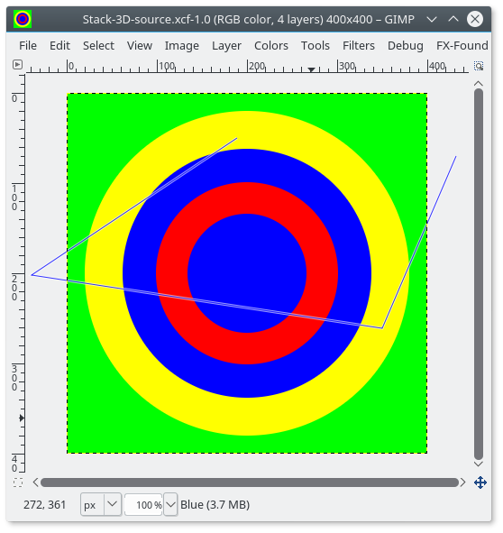
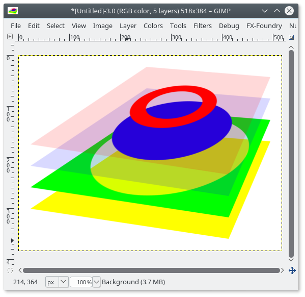

This script makes an image that represents the layers in the initial image as a perspective 3D stack.

Image>Stack layers with perspective), specifying the perspective path created above. The script creates a new image:
Perspective Path: the path used to create the perspective.
It must have at least one stroke, and the first stroke should have at least four anchors.
The anchors can be in any order, the two closest to the top are assumed to apply to the top corners,
and the other two to the bottom corners, and in each group, the one further left is assumed to apply
to the left corner. What happens with a perfect diamond is anyone's guess.
Spacing: the vertical space between layers in the stack, expressed as a ratio
of the height of the transformed layers.
Margin: the size of the canvas margins around the stack, expressed as a ratio
of the width of the transformed layers. A margin of 0 of course means no margins.
Merge layers: merge selected layers to the layer below to stack them as one single layer.
None: No layers are mergedText layers: Text layers (those editable with the Text tool) are merged down.
This is useful to maintain layer annotations as seperate text layers.
All text layers are merged: if there are several text layers above a non-text layer,
all these layers will be merged into one.Linked layer: Merge the mayers with the chainlink icon activated. This allows you to hand-pick the merged layers.Ghost opacity: the opacity of the ghosting that fills the layer where it is transparent.
An opacity of 0 of course means no ghosting.
Ghost color source: the source for the color of the ghost. The choices are:
Background color: Gimp's current background colorSpecified color: a color specified in the next field of the dialogAverage layer color: the average color of the layer. Dominant layer color: the median color of the layer, which is the dominant color when there are only two colors.
This is often more useful than the average: in a layer with two main colors (for instance, light background and dark text),
the average color will be darker that the background, while the median will usually be the same as the background.Ghost color: the ghost color, ignored unless also mentioned in the selector above.